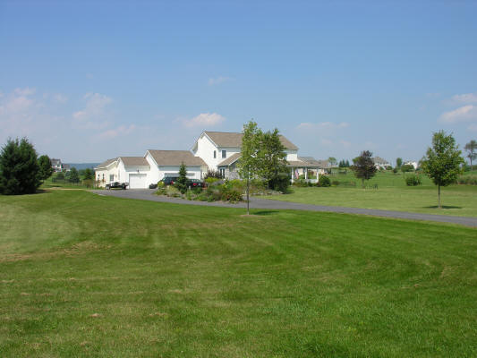
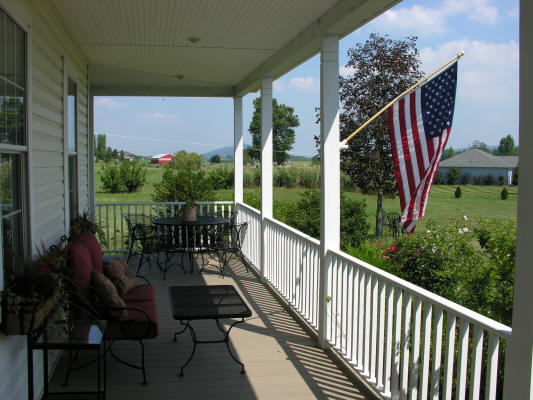

119 Airport Road
Centre Hall, Pennsylvania
4 Bedroom, 3 Bath Home for Sale


Tranquility at its best.
Neighborhood of 3 plus acre lots, quiet, lightly traveled streets with easy access to major east/west roads. This 3.02 acre lot, professionally landscaped, includes over 40 trees including Bradford Pear, Red Bud, 5 Maples plus Japanese and Red Maples, Pink Dogwood, Hydrangea, Weeping Pines (2), Chinese Lilac, Dawn Redwood, White Birch, Locust, Pear (2), Apple (2), Norway Spruce (14), and 8 miscellaneous mature pines, and over 100 bushes including roses, burning, forsythia, butterfly, dogwood and holly. The property hosts a wide variety of beautiful birds, including Bluebirds, Bluejays, Barn Swallows, and Starlings. Wake to serenades by Mourning Doves, Mocking Birds, and others. Sit by the many oversized windows to watch Cardinal, Robin and Humming Bird families feed and nest in the bushes and trees.
The home features many recent upgrades, including new hardwood and tile floors, roof, dual water heaters, well pump, A/C, generator, alarm system, kitchen upgrades and remodeled baths that include a jetted tub and wet/dry sauna. The house includes 4 bedrooms (each with ceiling fans), 3 full baths, sitting room as well as large family room with ceiling fan and separate thermostat controlling a gas fireplace, sit-in kitchen addition with 6 oversized windows, two exterior doors and ceiling fan, as well as formal dining room with wainscoting, a kennel/play room with heat and ceiling fan as well as hot/cold water, large 3 bay garage, and partially finished basement.